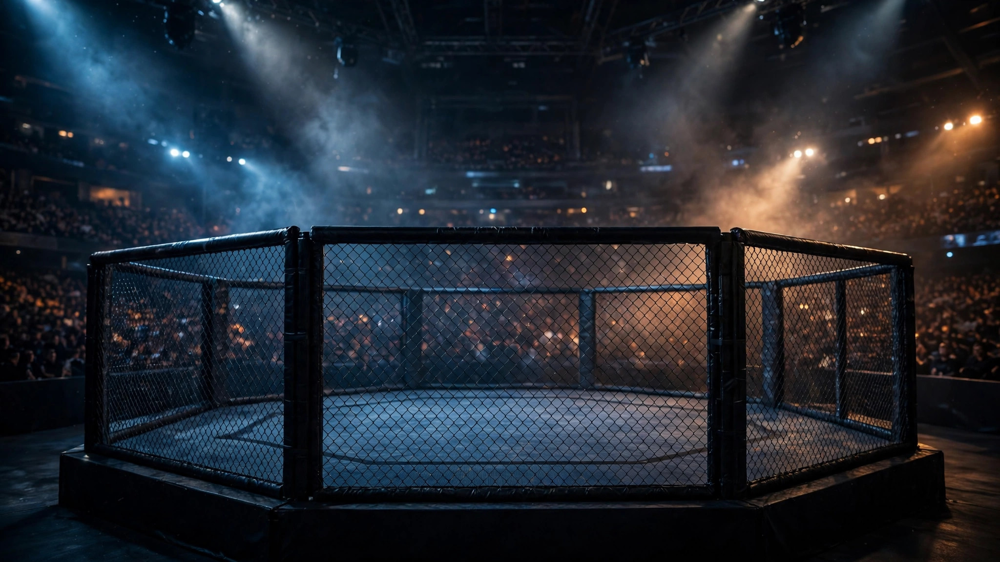

UFC Qatar Results: Stirling's 2-Seconds-Left KO, Ortega Retires, Vallejos Calls Out Volkanovski

Two seconds left in the round. That is all it took for the biggest moment of UFC Qatar — and it was only one of three storylines that made UFC Fight Night 294 a night to remember. Navajo Stirling knocked out former light heavyweight champion Jiří Procházka at 4:58 of round 2, Brian Ortega laid his gloves down in the Octagon and retired after losing to Dan Hooker, and Kevin Vallejos beat Aljamain Sterling and then called out featherweight champion Alexander Volkanovski.
The card at the ABHA Arena in Doha on Saturday 21 November 2026 produced eight decisions from 12 bouts and four finishes — and all four finishers took home a $100,000 Performance of the Night bonus.
1. Stirling Knocks Out Procházka With Two Seconds Left
Navajo Stirling defeated Jiří Procházka by knockout (right hand) at 4:58 of round 2 in the main event. Stirling stayed patient, worked behind leg kicks and jabs, and then — just as the fight looked certain to reach round 3 — slipped a punch from Procházka and came over the top with a clean right hook that dropped the former champion against the fence. Referee Marc Goddard stepped in as Stirling landed follow-up punches.
It was a comeback inside the fight itself: Procházka had dropped Stirling in the opening round and threatened to steal the fight before Stirling's late finish. Stirling still outlanded him clearly, with 48 significant strikes to Procházka's 23.
The win keeps Stirling unbeaten at 12-0 (7-0 in the UFC). It was his fourth straight stoppage win in 2026 — all by knockout — and his second straight victory over a former champion. After the fight, Stirling named Magomed Ankalaev as a potential next opponent. The UFC's own report notes the awkward wrinkle in his title path: his City Kickboxing teammate Carlos Ulberg currently sits atop the light heavyweight division.
2. Ortega Retires in the Octagon After Losing to Hooker
Dan Hooker defeated Brian Ortega by unanimous decision (30-27 on all three cards), snapping a three-fight losing skid for his first win since August 2024. Hooker controlled the lightweight fight with leg kicks, body shots and combinations, setting the range and tempo while Ortega struggled to find consistent success.
Then came the night's emotional moment. After the decision was read, Ortega removed his gloves and placed them in the centre of the Octagon — the sport's traditional farewell gesture. In his post-fight interview with Michael Bisping, he said he believed it would be the end of his career, speaking about the personal transformation he has undergone since beginning his journey in the sport.
Ortega retires with a 16-6 professional record and one no contest, closing a 12-year UFC career that included wins over Frankie Edgar, Renato Moicano, Chan Sung Jung and Yair Rodriguez, and two featherweight title challenges. Hooker, meanwhile, called for a fight with Max Holloway for the real BMF title next.
3. Vallejos Beats Sterling — Then Calls Out Volkanovski
In the co-main event, Kevin Vallejos defeated Aljamain Sterling by unanimous decision (30-27, 30-27, 29-28). The 24-year-old Argentine shut down the former bantamweight champion's wrestling with outstanding takedown defence and outlanded him with sharp, technical striking across all three rounds. It was a close fight — as close as it gets, by one account — but all three judges favoured Vallejos.
The win is the biggest of Vallejos's career: he is now 19-1 and 5-0 in the UFC, and owns the longest active winning streak in the featherweight division. In his post-fight interview he made his case plainly — he wants a title shot next, and the only logical opponent is featherweight champion Alexander Volkanovski.
Full Results — UFC Fight Night 294, Doha
All 12 bouts from the ABHA Arena, Saturday 21 November 2026. Main card aired at 1 p.m. ET and prelims at 10 a.m. ET on Paramount+.
Main card
| Winner | Loser | Method |
|---|---|---|
| Navajo Stirling | Jiří Procházka | KO (right hand) — R2, 4:58 |
| Kevin Vallejos | Aljamain Sterling | Unanimous decision (30-27, 30-27, 29-28) |
| Dan Hooker | Brian Ortega | Unanimous decision (30-27, 30-27, 30-27) |
| Kyoji Horiguchi | Asu Almabayev | Unanimous decision (30-27, 30-27, 29-28) |
| Ikram Aliskerov | Jared Cannonier | Unanimous decision (30-27, 30-27, 30-27) |
Preliminary card
| Winner | Loser | Method |
|---|---|---|
| Santiago Luna | Aleksandre Topuria | Split decision (30-27, 28-29, 29-28) |
| Tallison Teixeira | Shamil Gaziev | Unanimous decision (30-27, 29-28, 29-28) |
| Amir Albazi | Alessandro Costa | Submission (rear-naked choke) — R3, 4:34 |
| Tahir Abdullayev | Jake Matthews | Unanimous decision (30-27, 30-27, 29-28) |
| Dom Mar Fan | Nikolas Motta | Unanimous decision (30-26, 30-26, 29-27) |
| Diyar Nurgozhay | Alik Lorenz | TKO (head kick and punches) — R2, 0:24 |
| John Mitchell | Shoaib Yousaf | KO/TKO (knee) — R1, 3:50 |
Three more results worth noting from the prelims: Amir Albazi was docked a point for grabbing the fence against Alessandro Costa, but recovered to choke out an exhausted Costa with 26 seconds left in the third round. Diyar Nurgozhay stopped debuting Alik Lorenz with a head kick just 24 seconds into round 2. And John Mitchell knocked out Shoaib Yousaf with a knee in the first round — on a UFC debut he took on just three days' notice.
What's Next
Stirling's title path: at 12-0 with four knockouts in 2026, Stirling is firmly in the light heavyweight title picture — and in the Fighter of the Year conversation. The question is who he faces next: he named Ankalaev as a possible opponent, but his own teammate Ulberg sits at the top of the division, which complicates the road to a title shot.
Vallejos vs Volkanovski: Vallejos has made his case for the title shot, and at 5-0 in the UFC with the division's longest active winning streak, he should claim a top-5 spot. If the championship fight does not come next, a title eliminator would be the obvious consolation. Nothing is booked yet.
Hooker: after snapping his three-fight skid, Hooker wants Max Holloway for the BMF title — a callout he made in the Octagon after the win.
Horiguchi: the former champion returned to Qatar for a second straight year and won a clear decision over Almabayev on damage, despite giving up takedowns. He called for a title shot afterwards.
Aliskerov: now 6-1 in the UFC and 19-2 overall after a one-sided win over former title challenger Jared Cannonier, he has won four straight and is closing in on a top-10 spot at middleweight.
Bonuses: Four Fighters Take Home $100,000 Each
The UFC handed out four Performance of the Night bonuses of $100,000 each — one for every finisher on the card:
Navajo Stirling — for the 4:58 round-2 knockout of Procházka in the main event.
Amir Albazi — for the third-round rear-naked choke submission of Alessandro Costa.
Diyar Nurgozhay — for the second-round head-kick stoppage of Alik Lorenz.
John Mitchell — for the first-round knee knockout of Shoaib Yousaf on three days' notice.
No Fight of the Night bonus was awarded. The preliminary-card split-decision war between Santiago Luna and Aleksandre Topuria — the obvious candidate — went unrewarded.
Quick Answers
Did Brian Ortega really retire?
Yes. After losing to Dan Hooker by unanimous decision, Ortega placed his gloves in the centre of the Octagon and told Michael Bisping in his post-fight interview that he believed it was the end of his career.
Is Kevin Vallejos fighting Alexander Volkanovski next?
Not that anyone has announced. Vallejos called out the featherweight champion after beating Sterling and said he wants a title shot — but no fight has been booked.
How did Stirling beat Procházka?
By knockout at 4:58 of round 2 — a right hook with two seconds left in the round, after Procházka had dropped him in the first round.
How much were the bonuses?
$100,000 each to four fighters — Stirling, Albazi, Nurgozhay and Mitchell. There was no Fight of the Night bonus.
How many fights ended in a finish?
Four of 12 bouts. The other eight went to the judges' scorecards.
Results verified 23 November 2026 against UFC.com official results and scorecards, MMA Junkie (live results and post-event facts), Field Level Media, Sherdog and the Sunday Guardian.